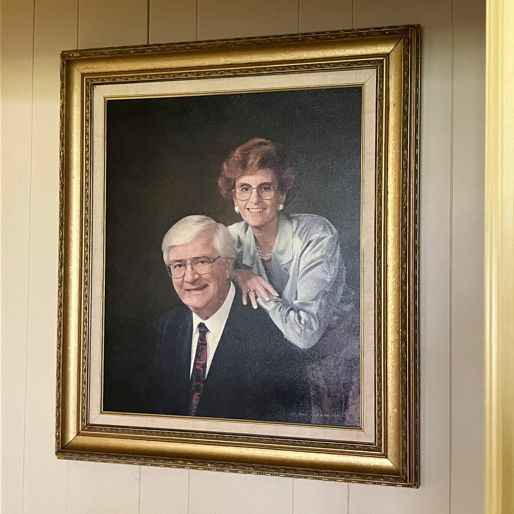

Jim plays for Julie

In June 1985, Julie traveled to London with her friend Dottie. While she was away, Jim recorded this album for her.
A-side
- 00:40 Sophisticated lady, Duke Ellington
- 04:19 Blue, blue world
- 08:03 Don't blame me for falling in love with you
- 11:05 The way I want you to think of me
- 18:16 I may be wrong, but I think you're wonderful
- 20:08 I do have feelings
- 22:59 See if you can guess what this thing is
- 25:57 Mine is just a lazy river
- 28:55 I'm a little cassette, short and stout, turn me over I've run out!
B-side
- 00:11 Moon river
- 03:15 Foggy day
- 05:53 I'll be seeing you
- 08:18 Honeysuckle rose
- 09:55 Very tenderly
- 14:17 Judeline, composed just for Julie!
- 18:01 I don't miss you all the time, just Night and day
- 20:06 Clair de lune
- 22:54 As time goes by
- 26:37 Embraceable you
- 28:28 I love you truly, Carrie Jacobs-Bond